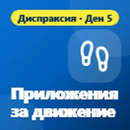
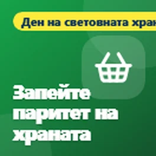
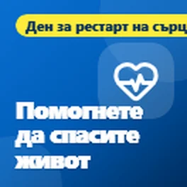
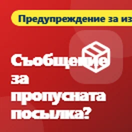
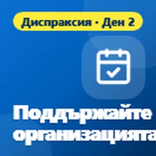
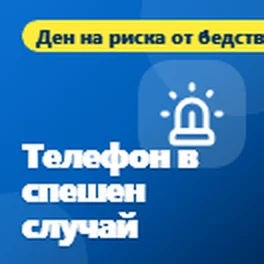
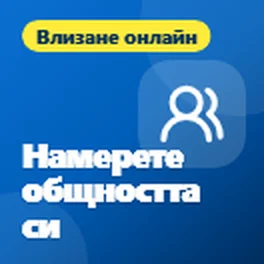
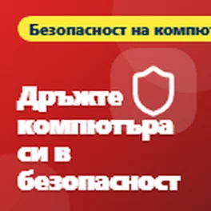
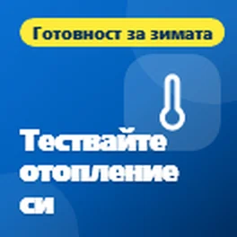

Тази страница е преведена автоматично. Ако нещо не звучи правилно, моля, кажете ми.
Безплатни технологични съвети за Бридлингтън и Ист Рейдинг оф Йоркшир
Просто език за помощ с телефони, компютри и безопасност в интернет. Безплатно, без никакви регистрационни такси.
Най-новите съвети
Getting online makes everyday life easier
This week is Get Online Week, a national campaign to help more people feel confident using the internet. Being online has become part of everyday life,...
It sounds like your family. It might not be.
I wanted to share a warning about a scam that's becoming more common: phone calls using a copy of a family member's voice.
Control your phone with your voice
It's day five of National Braille Week, and today I wanted to share how you can control your phone using just your voice.
Диспексия: помощ за възрастни и ученици
Това е последният ден на Седмицата на осведомеността за диспексия, и исках да завърша с разделяне на подкрепа за възрастни и ученици, защото диспексията не спира...
Имаш ли памук или аларма за падане? Провери сега
Исках да споделя нещо важно за всеки, който има лична аларма, като памук или аларма за падане, която работи през телефонната линия в дома си.
Безплатни книги и телевизия, която можете да слушате
Днес е четвъртият ден на Националната седмица за Брайля, а днес съветите са за книги, радио и телевизия, които можете да слушате.
Безплатни инструменти за намаляване на сметките за брандбред и телефон
Днес е Международния ден за елиминиране на бедността, така че исках да споделя някои безплатни инструменти, които могат да ви помогнат да намалите разходите си за брандбред...
Диспраксия: техник за на движение
Днес е шестят ден на седмицата за осведоменост за диспраксия, а днес исках да споделя техник, който помага за движение.
Нека телефонът ви ви чете
Днес е третият ден на Националната седмица за Брайля, а днес исках да споделя някои безплатни начини да направите телефона или компютъра си да ви чете на глас.

Диспексия: приложения за движение
Това е пятото ден на седмицата за осведоменост за диспексия, а днес съветите са за движение.

Запазвайте пари от храната с телефона си
Днес е Всемирния ден на храната, така че исках да споделя някои безплатни приложения, които могат да ви помогнат да спестите пари от храната и да спрете доброто хранително отпадъци.

Безплатни приложения, които могат да ви помогнат да спестите живот
Днес е денят за рестарт на сърцето, така че исках да споделя някои безплатни приложения и уебсайтове, които могат да ви помогнат да научите как да правите първа помощ при спиране на сърцето, ако някой има проблем с сърцето.
Навигация при загуба на зрение
Днес е втория ден на Националната седмица за Брайля, а днес е и денят за безопасност на белия посочен палец, така че исках да споделя някои безплатни приложения, които помагат на хората с загуба на зрение...
Диспексия: инструменти, които улесняват четенето
Днес е четвъртият ден на седмицата за осведоменост за диспексия, а днес исках да споделя някои безплатни инструменти, които улесняват четенето.

Получихте съобщение за пропусната куриерска пратка?
Исках да споделя предупреждение за фалшиви съобщения за доставка на поръчки, тъй като те са един от най-честите измами в момента.
Диспексия: когато ръкописането е трудно
Днес е третият ден на седмицата за осведоменост за диспексия, а съветите днес са за всеки, който намира ръкописането за трудно.
Затруднявате четене на телефона си?
Тази седмица е Националната седмица за Брайля, така че исках да споделя някои безплатни функции на телефона си, които могат да направят голяма разлика, ако зрението ви не е толкова...
Има ли стара телефон или лаптоп в ящичката си?
Днес е Международният ден за отпадъците от електрическо оборудване, което е добро напомняне за всички тези стари телефони, таблети и лаптопи, които стоят в ящики. Повече от нас имат...

Диспраксия: инструменти за поддържане на реда
Днес е втория ден на Седмицата за осведомяване за диспексия, и днес искам да споделя някои безплатни инструменти, които помагат за поддържане на реда.

Телефонът може да ви помогне в спешен случай
Днес е Международният ден за намаляване на риска от бедствия, така че исках да споделя няколко функции на вашия телефон, които могат да ви помогнат в спешен случай....
Уморени ръце? Нека телефонът и лаптопът ти правят работа
Днес е Всемирния ден на ревматизма, така че исках да споделя някои функции на вашия телефон и лаптоп, които могат да направят живота ви много по-лесен, ако имате болки, скованост или...
Технологии, които помагат на децата да учат, а не да се опитват да се опишат
Тази седмица е седмицата за осведомяване за диспексия (Dyspraxia), така че исках да споделя някои начини, по които технологиите могат да помогнат на децата с диспексия. Идеята е да използваме технологиите за да им помогнем...
Направете телефона си да работи за вашето благополучие
Денят за психично здраве беше 10 октомври, така че исках да споделя няколко прости неща, които телефонът ви вече може да прави, за да се почувствате малко по-спокойни и по-...

Каквото харесвате, има общност за това
Исках да споделя нещо, което много хора не са осъзнали, че съществува.
Реклами се появяват от нищо?
След моята публикация за ужасяващи рекламни прозорци, ето какво да направите, ако рекламите продължават да се появяват на вашия Android телефон, дори когато не използвате никаква програма.
Ужасяващ прозорец на телефона си? Това е просто реклама
Исках да споделя един съвет за тези ужасяващи прозорци, които понякога се появяват на телефоните.
Вашата навигация е изгубена?
Ето бърз съвет за всеки, който все още използва навигационна система в автомобила.
Включен в списъка за награди Time2Volunteer 2026
Исках да споделя новини. Скоро бях включен в списъка за награди Time2Volunteer 2026 за доброволчеството, което правим с местна техническа поддръжка...

Прости факти за безопасност на вашия компютър
Исках да споделя няколко съвета за безопасността на вашия компютър, защото много хора в крайна сметка плащат за антивирус, който не го имат нужда.
Какво е QR код?
Просто исках да споделя бърк съвет за QR кодове.
Проверете таймерите за отопление и гореща вода
С приближаването на по-студеното време, сега е добро време да проверите таймерите за отопление и гореща вода.

Тествайте отоплението си преди зимата
С приближаването на зимата, сега е добро време да тествате отоплението си, особено ако не е използвано много през годината.
Преглеждайте съвети по тема
- Scams and staying safe (5)
- Health and wellbeing (15)
- Предим (2)
- Getting online and staying connected (3)
- Новини (1)
- Повсякденна техника (6)
Какво казват хората
Много ви благодаря, господине
Да, определено полезно, благодаря. Ще споделя с всеки, на когото смятам, че съветите ви ще са полезни 😃
Полезно, благодаря
Получавайте нови съвети по имейл
Кратък имейл, когато публикувам нов съвет. Безплатно и можете да се отпишете по всяко време.
Ще получите имейл за потвърждение. Имейлите се изпращат от follow.it и всеки има връзка за отписване.